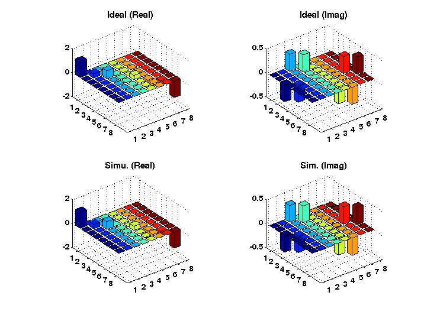

FileName : barGRAPE
Contents
Description
Plots separate plots for the Real and Imaginary part of a density matrix, after the application of both theroretical operator and GRAPE simulated operator.
Command
barGRAPE(GRinfo,indm)
GRinfo : Variable in which all the information of grape pulse is stored.
indm : Initial density matrix on which the pulse will be applied, by default it is the thermal equilibrium density matrix of NMR system.
Example Output
Shown below is an example plot. Red is ux and green is uy.

function barGRAPE(GRinfo,indm) global gra gra=GRinfo; [~,~,Iz,~,~,~,sIHz] = prodop(gra.spinNumbers,gra.spinlist); %-------Declaring Default Inputs-------------------- if (nargin < 2 || isempty(indm)); indm=sum(Iz,3); end; %----------------------------------------------------- outdm_sim = gra.Usim*indm*(gra.Usim)'; outdm_th = gra.Utarg*indm*(gra.Utarg)'; %--------PLOTTING------------------------------ figure subplot(2,2,1),bar3(real(outdm_th)); t1a=title('Ideal (Real)'); set(gca,'FontSize',10,'FontWeight','bold') subplot(2,2,2),bar3(imag(outdm_th)); t2a=title('Ideal (Imag)'); set(gca,'FontSize',10,'FontWeight','bold') subplot(2,2,3),bar3(real(outdm_sim)); t1=title('Simu. (Real)'); set(gca,'FontSize',10,'FontWeight','bold') subplot(2,2,4),bar3(imag(outdm_sim)); t2=title('Sim. (Imag)'); set(gca,'FontSize',10,'FontWeight','bold') set([t1 t1a t2 t2a],'FontSize',12,'FontWeight','bold')